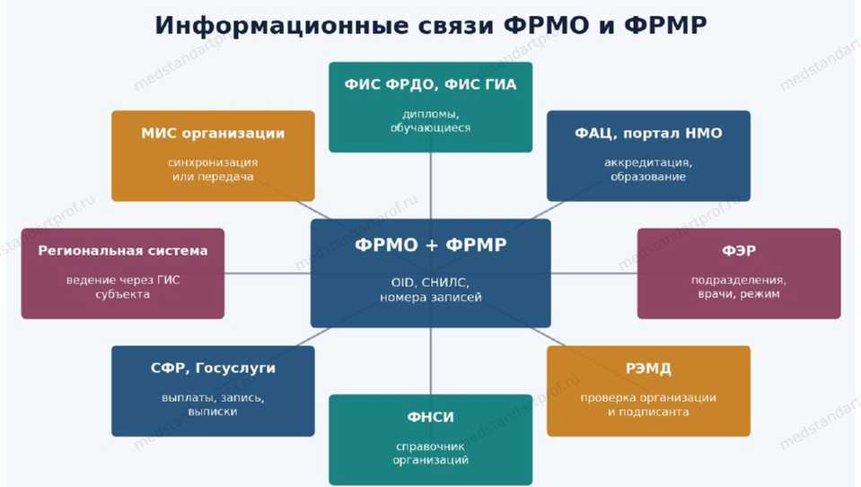
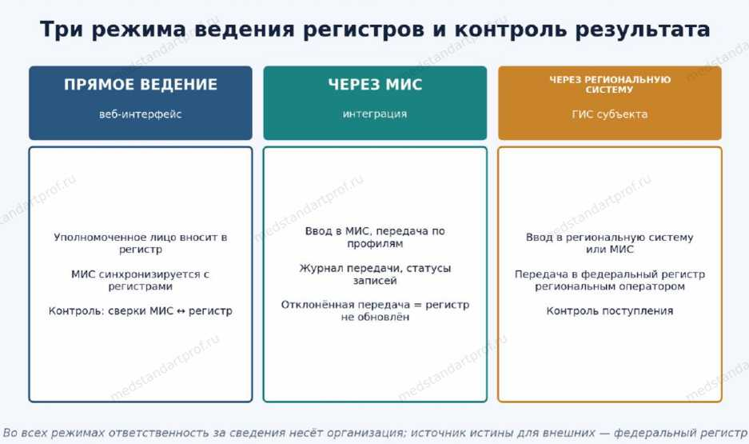
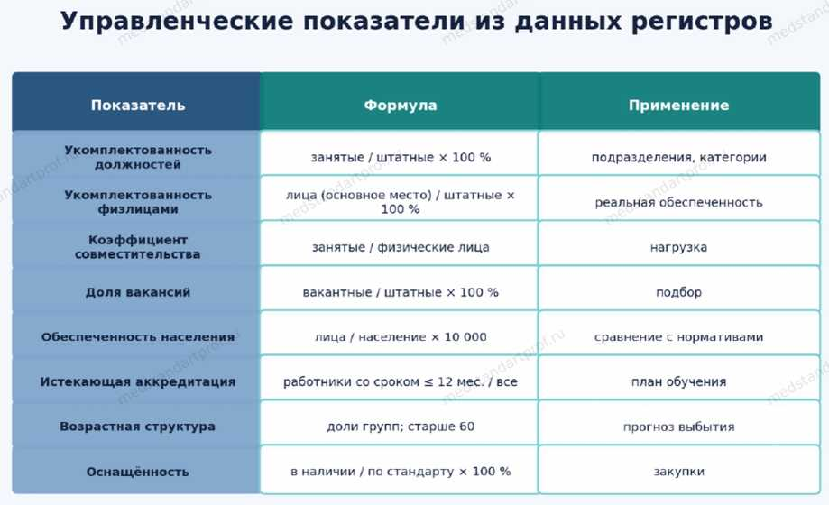
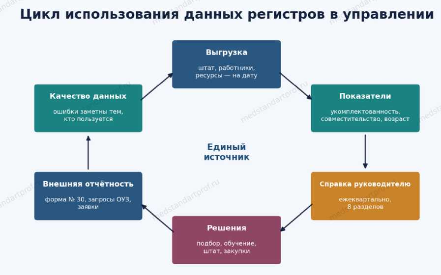
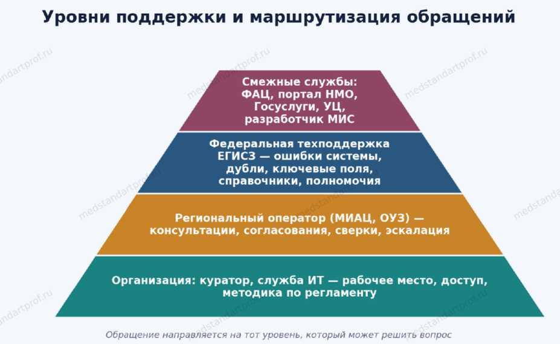
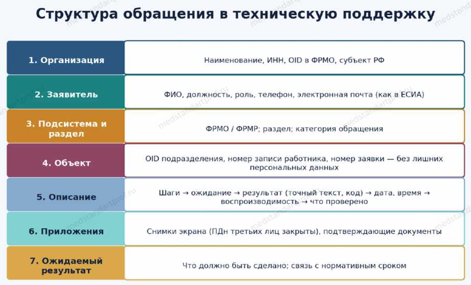

Регистры не существуют изолированно: их данные ежедневно запрашивают другие подсистемы единой системы, медицинская информационная система организации и региональная система. Понимание этих связей позволяет уполномоченному лицу предсказывать последствия каждой записи и правильно диагностировать ошибки, проявляющиеся «в другом месте» — при регистрации электронного документа, публикации расписания, передаче данных в региональную систему.
Цель лекции — описать информационные связи ФРМО и ФРМР с подсистемами единой системы, медицинскими и региональными информационными системами, интеграционные механизмы и типовые ситуации, в которых ошибки регистров проявляются в смежных системах.
1. Схема связей
|
Система |
Что получает из регистров |
Что передаёт в регистры |
|
Федеральный реестр НСИ |
Формирует справочник «Реестр медицинских организаций» из ФРМО |
Справочники для полей регистров |
|
РЭМД |
Идентификаторы организации и подразделения, сведения о работнике для проверки документа |
|
|
ИЭМК |
Организация, подразделение, лечащий врач |
— |
|
ФЭР |
Подразделения, режим работы, врачи и специальности |
— |
|
Специализированные регистры, ВИМИС |
Организации, врачи |
— |
|
Подсистема сбора показателей |
Ресурсы, кадры |
— |
|
Федеральный аккредитационный центр |
Сведения о специалисте, стаж |
Протоколы аккредитации |
|
Портал НМО |
Специалист, специальность |
Образовательная активность |
|
ФИС ФРДО |
— |
Документы об образовании |
|
ФИС ГИА и приёма |
— |
Записи об обучающихся |
|
Медицинская информационная система организации |
Структура, штат, работники (синхронизация) |
Сведения для регистров (при интеграционном ведении) |
|
Региональная система (ГИС СЗ субъекта) |
Данные организаций региона |
Сведения организаций (при ведении через региональную систему) |
|
Портал государственных услуг |
Организации и врачи для записи; выписки об аккредитации |
— |
|
Социальный фонд |
Проверка реестров выплат |
— |

Рисунок 1. Информационные связи ФРМО и ФРМР
Каждый структурированный электронный медицинский документ (СЭМД), передаваемый в РЭМД, содержит OID организации и подразделения из ФРМО, а также сведения о медицинском работнике, подписавшем документ. При регистрации документа РЭМД проверяет: организация существует и действует; подразделение принадлежит организации; работник имеет открытое занятие должности в организации на дату документа; должность и специальность соответствуют справочникам. Несоответствие — отказ в регистрации с кодом ошибки, указывающим на регистр.
Сведения ФРМО публикуются в справочнике федерального реестра нормативно-справочной информации, который используют все подсистемы и медицинские информационные системы страны. Изменение наименования или структуры в ФРМО через некоторое время отражается в справочнике; до этого другие системы «видят» прежние данные. Это объясняет задержки между исправлением в ФРМО и прекращением ошибок в смежных системах.
Запись работника имеет уникальный номер реестровой записи; в электронных документах и при интеграции работник идентифицируется по СНИЛС. Ошибка СНИЛС в регистре или в медицинской информационной системе приводит к несопоставлению врача — типичная причина отказов РЭМД.
Уполномоченное лицо вносит сведения в интерфейсе регистров; смежные системы получают их через сервисы единой системы. Для организации, ведущей регистры напрямую, важно обеспечить синхронизацию собственной медицинской информационной системы с регистрами: большинство систем поддерживает загрузку структуры и списка работников из ФРМО и ФРМР по сервисам единой системы, что исключает двойной ввод и расхождения.
Медицинская информационная система, подключённая к единой системе по интеграционным профилям (регламентам информационного взаимодействия, публикуемым оператором), передаёт сведения о структуре и работниках в регистры. Уполномоченное лицо ведёт данные в МИС, а передача выполняется автоматически. Особенности:
• ответственность за сведения сохраняется за организацией;
• необходимо контролировать результат передачи (журнал интеграции, статусы записей): отклонённая передача означает, что сведения в регистре не обновлены, хотя в МИС внесены;
• ошибки форматно-логического контроля возвращаются в МИС и требуют исправления в ней;
• при расхождении МИС и регистра источником истины для внешних потребителей является регистр.
В ряде субъектов Российской Федерации сведения организаций в ФРМО и ФРМР передаются через государственную информационную систему субъекта: организация ведёт данные в региональной системе (или в МИС, интегрированной с ней), региональная система передаёт их в федеральные регистры. Региональный оператор в этом случае — участник процесса, и порядок взаимодействия устанавливается региональными актами. Уполномоченное лицо должно знать, где именно вносятся первичные сведения и как проверить их поступление в федеральный регистр.
Интеграционное взаимодействие осуществляется по защищённой сети передачи данных с применением сертифицированных средств криптографической защиты; подключение организации выполняется по регламенту оператора при участии службы информационных технологий. Веб-доступ уполномоченных лиц защищённой сети не требует.
Рисунок 2. Три режима ведения регистров и контроль результата
4. Типовые ситуации в смежных системах
|
Проявление |
Причина в регистрах |
Действие |
|
РЭМД отклоняет документы всех врачей |
Подразделение закрыто, переименовано с |
Проверить подразделение в ФРМО; |

|
подразделения |
созданием нового OID, привязано к нелицензированному адресу |
синхронизировать МИС |
|
РЭМД отклоняет документы одного врача |
Занятие не открыто, закрыто ошибочно, СНИЛС не совпадает, должность не из справочника |
Проверить карточку в ФРМР; сверить СНИЛС в МИС |
|
Расписание врача не публикуется в ФЭР |
Врач без занятия в подразделении; подразделение без условий «амбулаторно»; режим работы не заполнен |
Проверить ФРМР и ФРМО |
|
Организация не отображается на портале государственных услуг для записи |
Не заполнены признаки участия в ОМС, условия помощи, режим работы; расхождение справочника |
Проверить ФРМО; подождать обновления справочника |
|
В МИС «пропал» врач или подразделение |
Синхронизация с регистром применила изменение (закрытие) |
Проверить, было ли закрытие обоснованным |
|
Работник не видит в личном кабинете организацию |
Занятие внесено в дубль или с ошибкой |
Поиск по СНИЛС, проверка |
|
Региональная система показывает расхождение с федеральным регистром |
Передача не выполнена или отклонена |
Проверить журнал передачи; повторить; обращение |
|
Аккредитационный центр не находит стаж |
Занятия не внесены, разрыв |
Внести историю занятий |
Служба информационных технологий и уполномоченные лица обеспечивают:
• настройку синхронизации МИС с регистрами (периодичность, направление);
• контроль журнала интеграции при интеграционном ведении;
• своевременное обновление справочников в МИС (номенклатуры должностей и специальностей, ФНСИ);
• передачу разработчику описаний ошибок с кодами, полученными от единой системы;
• тестирование после обновлений МИС и изменений интеграционных профилей.
Регламент организации разграничивает: содержательные вопросы (что внести) — уполномоченные лица; технические (почему не передалось) — служба информационных технологий и разработчик.
Оператор публикует регламенты информационного взаимодействия и их версии на портале оперативного взаимодействия; при выпуске новой версии устанавливается переходный период. Организация с интеграционным ведением обязана обеспечить обновление МИС к сроку; при прямом ведении — учитывать изменения интерфейса. Куратор отслеживает публикации и включает их в план актуализации регламента.
ФРМО и ФРМР связаны с подсистемами единой системы, медицинской информационной системой и региональной системой через идентификаторы (OID, СНИЛС) и справочники ФНСИ. Регистры могут вестись напрямую, через МИС или через региональную систему; во всех случаях организация отвечает за результат и обязана контролировать поступление сведений в федеральный регистр. Ошибки регистров проявляются в смежных системах — отказами РЭМД, отсутствием расписания, «пропавшими» врачами — и диагностируются по типовым ситуациям с проверкой соответствующего раздела регистра.
1. Постановление Правительства Российской Федерации от 09.02.2022 № 140 «О единой государственной информационной системе в сфере здравоохранения» (с последующими изменениями и дополнениями).
2. Приказ Минздрава России от 07.09.2020 № 947н «Об утверждении Порядка организации системы документооборота в сфере охраны здоровья в части ведения медицинской документации в форме электронных документов» (с последующими изменениями и дополнениями).
3. Приказ Минздрава России от 28.10.2022 № 708н, пункты 4, 21.
4. Регламенты информационного взаимодействия (интеграционные профили) подсистем ЕГИСЗ. — URL: portal.egisz.rosminzdrav.ru.
5. Федеральный реестр нормативно-справочной информации. — URL: nsi.rosminzdrav.ru.
6. Руководства пользователя ФРМО и ФРМР.
Регистры воспринимаются как обязанность, но для организации они — готовый источник управленческой информации: укомплектованность по подразделениям, коэффициент совместительства, возрастная структура, сроки аккредитации, оснащённость. Организация, которая использует собственные данные, получает двойную выгоду: принимает обоснованные кадровые решения и поддерживает качество данных, поскольку ошибки становятся заметны тем, кто на эти данные опирается.
Цель лекции — освоить состав выгрузок и отчётов регистров, методику расчёта управленческих показателей на их основе и правила обращения с выгрузками, содержащими персональные данные.
• штатное расписание по подразделениям: штатные, занятые, вакантные ставки, физические лица;
• перечень структурных подразделений с характеристиками;
• перечень зданий;
• коечный фонд по профилям и подразделениям;
• перечень оборудования по типам, подразделениям, состоянию;
• перечень транспорта;
• участки и прикреплённое население;
• сведения о лицензиях;
• отчётные таблицы для статистических форм (в частности, таблицы формы № 30 о штатах и кадрах), формируемые из регистров.
• список работников организации с должностями, подразделениями, ставками, типами занятости, датами;
• работники по категориям персонала и специальностям;
• работники с истекающими (истёкшими) сроками аккредитации;
• работники без сведений об образовании или аккредитации;
• работники в длительных отпусках;
• движение кадров за период (приняты, уволены, переведены);
• возрастная структура;
• квалификационные категории.
Состав отчётов определяется действующей версией интерфейса; выгрузки формируются в табличных форматах для последующей обработки.
На основе выгрузок организация рассчитывает показатели, используемые в отчётности и планировании:
|
Показатель |
Формула |
Применение |
|
У комплектованность должностей |
Занятые ставки / штатные ставки х 100 % |
По организации, подразделениям, категориям, должностям |
|
У комплектованность физическими лицами |
Физические лица (основное место) / штатные ставки х 100 % |
Оценка реальной обеспеченности |
|
Коэффициент совместительства |
Занятые ставки / физические лица |
Нагрузка на работников; норма — стремление к 1,0-1,2 |
|
Доля вакантных ставок |
Вакантные / штатные х 100 % |
Приоритеты подбора |
|
Обеспеченность населения врачами (средним персоналом) |
Физические лица / прикреплённое население х 10 000 |
Сравнение с нормативами и регионом |
|
Возрастная структура |
Доля работников по возрастным группам, доля старше пенсионного возраста |
Прогноз выбытия, преемственность |
|
Доля работников с истекающей аккредитацией в ближайшие 12 месяцев |
Такие работники / все работники х 100 % |
Планирование обучения |
|
Доля работников с квалификационной категорией |
С категорией / все х 100 % |
Показатели качества кадров |
|
Текучесть |
Уволенные за год / среднесписочная численность х 100 % |
Оценка стабильности |
|
Оснащённость по порядку оказания помощи |
Единицы оборудования в наличии / требуемые по стандарту оснащения х 100 % |
Планирование закупок |
Рисунок 1. Управленческие показатели из данных регистров
Рекомендуемая структура ежеквартальной справки по кадрам и ресурсам на основе регистров:
1. Укомплектованность по подразделениям и категориям с динамикой к прошлому кварталу; подразделения с укомплектованностью ниже установленного порога.
2. Совместительство — коэффициент по категориям; должности, по которым нагрузка превышает установленные пределы.
3. Вакансии — перечень с длительностью незанятости; приоритетные для подбора.
4. Аккредитация — работники со сроком до 12 месяцев; работники с истёкшей аккредитацией (недопустимо — требует немедленных мер).
5. Возраст и выбытие — прогноз выхода на пенсию; должности риска.
6. Оснащённость — оборудование со сроком службы, превышающим установленный; отсутствующие позиции по стандартам оснащения.
7. Качество данных — показатели из лекции 9.1.
8. Предложения — по подбору, обучению, изменению штатного расписания, закупкам.
Справка готовится куратором совместно с кадровой службой и статистиком; данные — из выгрузок регистров на первое число квартала с указанием даты.

Те же выгрузки используются:
• для подготовки статистической отчётности (форма № 30, отраслевые формы) — сверка и заполнение таблиц;
• для ответов на запросы органа управления здравоохранением (потребность в кадрах, заявки на целевое обучение, ординатуру);
• для обоснования заявок на оборудование по программам;
• для программ привлечения кадров («Земский доктор», региональные меры) — подтверждение вакансий;
• для подготовки к проверкам — демонстрация соответствия лицензионным требованиям по кадрам.
Единый источник (регистры) исключает противоречия между документами, направляемыми в разные органы.
Региональные операторы и Минздрав России публикуют аналитические панели (мониторинги укомплектованности, оснащённости, качества данных) по данным регистров, доступные органам управления и, в ряде регионов, организациям. Позиция организации в таких мониторингах определяется её данными; уполномоченное лицо должно понимать, какие поля влияют на показатели (например, штатные ставки — на укомплектованность; условия помощи — на классификацию подразделений), и обеспечивать их корректность. Подсистема автоматизированного сбора показателей формирует из регистров часть федеральной отчётности без участия организации — ещё одна причина поддерживать данные в актуальном состоянии постоянно, а не «к отчётной дате».
Выгрузки ФРМР содержат персональные данные. Регламент устанавливает:
1. Выгрузки формируются только уполномоченными лицами в объёме, необходимом для задачи; для аналитики, не требующей персональных данных, используются агрегированные отчёты.
2. Файлы хранятся в защищённых сетевых папках с доступом по перечню; не пересылаются по незащищённой почте; не копируются на съёмные носители без разрешения.
3. Передача выгрузок вне организации (органу управления, оператору) — по защищённым каналам, установленным получателем, с регистрацией.
4. Файлы уничтожаются после использования, если не подлежат хранению как приложения к актам сверок.
5. В справках руководителю персональные данные приводятся только при необходимости (например, перечень работников с истекающей аккредитацией — служебная информация ограниченного распространения).
Рисунок 2. Цикл использования данных регистров в управлении
Организации с развитой информационной инфраструктурой настраивают регулярное получение данных из регистров через сервисы единой системы в собственную аналитическую систему или МИС с автоматическим расчётом показателей и формированием справок. При этом сохраняются требования к защите данных и к проверке соответствия автоматических расчётов методике (например, учёт совместителей, длительных отпусков).
Регистры содержат готовые отчёты и выгрузки — штатное расписание с занятостью, списки работников, сроки аккредитации, ресурсы, — на основе которых организация рассчитывает укомплектованность, коэффициент совместительства, обеспеченность, возрастную структуру, оснащённость и качество данных. Ежеквартальная аналитическая справка руководителю переводит эти показатели в решения по подбору, обучению, штатному расписанию и закупкам, а единый источник обеспечивает согласованность отчётности для внешних органов. Выгрузки с персональными данными обрабатываются по правилам защиты, а федеральные и региональные мониторинги делают качество данных постоянной, а не отчётной задачей.

1. Постановление Правительства Российской Федерации от 09.02.2022 № 140 (с последующими изменениями и дополнениями).
2. Приказ Росстата об утверждении формы № 30 «Сведения о медицинской организации» (действующая редакция).
3. Порядки оказания медицинской помощи по профилям (стандарты оснащения) — действующие приказы Минздрава России.
4. Федеральный закон от 27.07.2006 № 152-ФЗ «О персональных данных», статьи 5, 19.
5. Приказ Минздрава России от 15.05.2012 № 543н (нормативы обеспеченности первичного звена).
6. Руководства пользователя ФРМО и ФРМР. — URL: portal.egisz.rosminzdrav.ru.
Ни одно руководство пользователя не описывает все ситуации, а сама единая система развивается непрерывно. Умение правильно и быстро получить помощь — часть квалификации уполномоченного лица. Правильно оформленное обращение решается за дни; обращение без идентификаторов и описания — возвращается на уточнение и растягивается на недели, в течение которых организация формально нарушает сроки.
Цель лекции — освоить структуру поддержки участников единой системы, каналы и правила оформления обращений, порядок их регистрации и контроля в организации, а также источники самостоятельного поиска решений.
1. Структура поддержки
|
Уровень |
Кто |
Что решает |
|
Внутренняя поддержка организации |
Куратор, служба информационных технологий |
Рабочее место, доступ, методические вопросы по регламенту |
|
Региональный оператор |
Медицинский информационноаналитический центр (или уполномоченная организация), орган управления здравоохранением |
Консультирование по ведению регистров, согласование изменений, региональные сверки, первичная диагностика, эскалация в федеральную поддержку |
|
Федеральная техническая поддержка ЕГИСЗ |
Служба технической поддержки оператора единой системы (на базе ФГБУ «ЦНИИОИЗ» Минздрава России) |
Ошибки системы, объединение дублей, исправление ключевых полей, дополнение справочников, вопросы доступа и полномочий |
|
Смежные службы |
Федеральный аккредитационный центр, портал НМО, техническая поддержка портала государственных услуг, удостоверяющие центры, разработчик МИС |
Вопросы соответствующих систем |
Принцип: обращение направляется на тот уровень, который может решить вопрос. Вопрос «как правильно внести перевод» — региональному оператору или по руководству; «система не сохраняет запись с ошибкой
кода ...» — в федеральную поддержку; «не подписывается заявка» — сначала служба информационных технологий и удостоверяющий центр.
Рисунок 1. Уровни поддержки и маршрутизация обращений
Портал (portal.egisz.rosminzdrav.ru) — официальный источник для участников:
• руководства пользователя всех подсистем (ФРМО, ФРМР, личный кабинет медицинского работника, личный кабинет участника) — актуальные версии с датами;
• регламенты информационного взаимодействия и интеграционные профили;
• новости об обновлениях, плановых работах, изменениях порядка доступа;
• обучающие материалы и записи вебинаров;
• типовые формы заявок и обращений;
• ссылки на портал технической поддержки и смежные сервисы.
Куратор организации проверяет портал не реже одного раза в неделю; новые версии руководств сохраняются в папке регламента, изменения доводятся до уполномоченных лиц.

Техническая поддержка принимает обращения через портал технической поддержки (регистрация обращения с получением номера, отслеживание статуса, база знаний с ответами на типовые вопросы), по электронной почте и по телефону горячей линии. Актуальные адреса и номера публикуются на портале оперативного взаимодействия; они изменялись (в частности, в 2020-х годах менялся номер горячей линии), поэтому организация использует контакты из действующих публикаций, а не из старых памяток. Регламент организации содержит перечень контактов с датой последней проверки.
Обращение через портал технической поддержки предпочтительно: оно получает номер, историю переписки и статус. При обращении по электронной почте номер присваивается ответным письмом. Телефон используется для консультаций и уточнения статуса; существенные вопросы дублируются письменно, поскольку организации требуется документальное подтверждение.
1. Идентификация организации: полное наименование, ИНН, OID организации в ФРМО, субъект Российской Федерации.
2. Идентификация заявителя: фамилия, имя, отчество уполномоченного лица, должность, контактный телефон и электронная почта (те же, что в ЕСИА), СНИЛС — только если обращение касается доступа и это предусмотрено формой.
3. Подсистема и раздел: ФРМО/ФРМР, раздел (например, «Штатное расписание», «Трудоустройство»).
4. Объект: идентификатор записи (OID подразделения, номер реестровой записи работника, инвентарный номер оборудования) — без избыточных персональных данных; для работника — номер записи и, при необходимости, СНИЛС.
5. Описание: что делали (пошагово), что ожидали, что получили (точный текст сообщения об ошибке, код), когда (дата, время), воспроизводится ли ошибка.
6. Снимки экрана с видимыми адресом страницы и сообщением об ошибке; персональные данные третьих лиц на снимках закрываются.
7. Приложения: подтверждающие документы (для объединения дублей — документы работника; для исправления реквизитов — выписка из ЕГРЮЛ; для лицензии — выписка из реестра лицензий).
8. Ожидаемый результат: что должно быть сделано.
4.2. Типовые категории обращений
|
Категория |
Что приложить |
Кто решает |
|
Ошибка при сохранении (код) |
Снимок, описание шагов |
Техподдержка |
|
Отсутствие значения в справочнике (должность, оборудование, организация) |
Наименование, нормативное основание (номенклатура, РУ) |
Техподдержка (ФНСИ) |
|
Дубль записи работника |
Номера записей, документы работника |
Техподдержка |
|
Отсутствие сведений об аккредитации |
Реквизиты протокола, выписка |
Техподдержка / ФАЦ |
|
Исправление ключевых реквизитов организации |
Выписка из ЕГРЮЛ |
Техподдержка |
|
Дубль организации |
ИНН, оба OID |
Техподдержка, региональный оператор |
|
Полномочия пользователя (заявка отклонена, не активируются) |
Номер заявки, СНИЛС |
Техподдержка |
|
Недоступность портала |
Время, снимок, результаты проверки сети |
Техподдержка (после проверки службой ИТ) |
|
Методический вопрос (как внести) |
Описание ситуации |
Региональный оператор, руководство пользователя |
|
Ошибка интеграции МИС |
Код ошибки, журнал передачи |
Разработчик МИС, затем техподдержка |
• Несколько разных вопросов в одном обращении — каждое обращение по одному вопросу.
• Обращение без идентификаторов («у нас не работает ФРМР»),
• Пересылка полных персональных данных работников без необходимости.
• Повторные обращения по тому же вопросу с новыми номерами — уточнения направляются в рамках существующего обращения.
• Обращение в федеральную поддержку по вопросам, решаемым региональным оператором, и наоборот.
Шаблон обращения включён в комплект курса (Шаблон 5).
Рисунок 2. Структура обращения в техническую поддержку
Регламент устанавливает журнал обращений (может быть частью журнала внесения сведений): номер обращения, дата, канал, подсистема, суть, объект, ожидаемый срок, статус, дата и суть ответа, результат. Обращения, связанные с нормативными сроками внесения сведений, помечаются: они подтверждают добросовестность организации. Куратор еженедельно контролирует открытые обращения; при отсутствии ответа в разумный срок (ориентир — 5-10 рабочих дней в зависимости от категории) — уточняет статус по телефону, при необходимости — через регионального оператора.
Региональный оператор — ближайший и, как правило, самый быстрый источник помощи. Организация:
• знает контакты кураторов регионального оператора по ФРМО и ФРМР (в регламенте);
• участвует в вебинарах и рассылках оператора;
• согласует с оператором изменения, требующие подтверждения (тип организации, регистрация, закрытие подразделений с историей);
• направляет через оператора эскалацию по обращениям, не решённым федеральной поддержкой в срок;
• отвечает на запросы оператора в установленные сроки.

Порядок взаимодействия закрепляется региональными актами; куратор организации отслеживает их актуальность.
До направления обращения уполномоченное лицо проверяет:
1. Руководство пользователя актуальной версии — раздел по соответствующей операции.
2. Базу знаний портала технической поддержки — типовые ошибки и решения.
3. Новости портала оперативного взаимодействия — плановые работы, известные проблемы.
4. Каталог ошибок курса (лекция 9.2) — не является ли ситуация следствием ошибки организации.
5. Рабочее место и полномочия (лекция 4.3) — дерево диагностики.
Обращение, направленное после этих проверок, содержит результаты проверок и решается быстрее.
Оператор и региональные центры проводят обучающие мероприятия при обновлениях регистров; участие уполномоченных лиц включается в план обучения организации. Материалы (презентации, записи) сохраняются куратором. Смена версии интерфейса — основание для внепланового инструктажа и, при необходимости, пересмотра регламента и памяток.
Поддержка участников единой системы организована по уровням — организация, региональный оператор, федеральная техническая поддержка, смежные службы, — и обращение направляется на уровень, способный решить вопрос. Официальные источники — портал оперативного взаимодействия (руководства, регламенты, новости) и портал технической поддержки (обращения с номерами, база знаний). Обращение оформляется по шаблону с идентификаторами организации и объекта, описанием шагов, точным текстом ошибки, снимками экрана и документами; регистрируется в журнале организации и контролируется куратором. Контакты поддержки периодически изменяются и берутся из действующих публикаций.
1. Постановление Правительства Российской Федерации от 09.02.2022 № 140 (с последующими изменениями и дополнениями).
2. Портал оперативного взаимодействия участников ЕГИСЗ. — URL: portal.egisz.rosminzdrav.ru.
3. Портал технической поддержки ЕГИСЗ (регистрация обращений, база знаний). — URL: support.egisz.rosminzdrav.ru.
4. Федеральный закон от 27.07.2006 № 152-ФЗ «О персональных данных», статья 5 (минимизация данных при обращениях).
5. Руководства пользователя ФРМО, ФРМР, личного кабинета участника ЕГИСЗ, личного кабинета медицинского работника.
6. Шаблон 5 курса «Обращение в техническую поддержку».
Заключительный практикум объединяет два навыка: превращение данных регистров в управленческую информацию и правильное оформление обращения в техническую поддержку. Обе части выполняются по пошаговым инструкциям; при отсутствии доступа используется учебная выгрузка из практикума 9.
Цель практикума — подготовить аналитическую справку по кадрам на основе выгрузки из регистров и оформить обращение в техническую поддержку по шаблону.
При наличии доступа: в ФРМО — штатное расписание по подразделениям (штатные, занятые ставки, физические лица); в ФРМР — список работников с должностями, подразделениями, ставками, типами занятости, датами приёма, датами рождения (или возрастными группами), сроками аккредитации. Сохраните файлы в защищённую папку, зафиксируйте дату выгрузки.
При отсутствии доступа: используйте учебные выгрузки практикума 9 (после исправления заложенных ошибок — то есть в «исправленном» состоянии: Р-02 — 1,0 + 0,5 совместительство; Р-03 и Р-14 — закрыты; Р-16 — внесена; штатных ставок по строке 2 — 9,0) и дополнительные учебные данные: даты рождения работников — Р-01 1961, Р-02 1988, Р-04 1959, Р-05 1994, Р-06 1975, Р-07 1990, Р-08 1968, Р-09 1957, Р-10 1997, Р-Н 1983, Р-12 1979, Р-13 1966, Р-15 1985, Р-16 2001; сроки аккредитации — Р-06 истёк 15.09.2026, Р-08 до 03.2027, Р-09 до 2030, Р-13 до 01.2027, остальные — более 12 месяцев.
По организации в целом и по подразделениям (терапевтическое, педиатрическое, лаборатория, филиал):
1. Укомплектованность должностей (занятые / штатные).
2. Укомплектованность физическими лицами (лица с основным местом / штатные).
3. Коэффициент совместительства (занятые / физические лица).
4. Доля вакантных ставок.
5. Возрастная структура: до 35 лет; 35-49; 50-59; 60 и старше — число и доля; работники старше 60 — перечень должностей риска.
6. Работники с истекающей аккредитацией в ближайшие 12 месяцев и с истёкшей.
7. Показатели качества данных (лекция 9.1) — по результатам практикума 9: полнота охвата, «лишние» записи, своевременность.
Оформите таблицей с указанием даты данных.
Шаг 3. Подготовьте аналитическую справку
По структуре лекции 10.2 (8 разделов) на одну-две страницы. Обязательные выводы: подразделения с укомплектованностью ниже 80 %; должности, по которым коэффициент совместительства превышает 1,3; работник с истёкшей аккредитацией (Р-06) — незамедлительные меры (отстранение от работы до аккредитации в порядке трудового законодательства, доклад руководителю); прогноз выбытия по возрасту; предложения по подбору и обучению.
Шаг 4. Проверьте соблюдение правил обращения с данными
Убедитесь, что справка для руководителя содержит персональные данные только там, где это необходимо (перечень по аккредитации), а выгрузки сохранены в защищённой папке и не пересылались по незащищённым каналам. Опишите, где и как хранятся файлы.
Оформите обращение по одной из ситуаций (или по реальной ситуации организации):
Ситуация А. При внесении занятия должности врача-невролога Р-07 система сообщает: «У работника уже существует основное место работы» — при этом обнаружена вторая запись (дубль) с иным СНИЛС, содержащая аккредитацию по неврологии без трудоустройства. Работник подтверждает, что СНИЛС в записи с аккредитацией верный, а в записи с трудоустройством — ошибочный (перепутаны две цифры).
Ситуация Б. В справочнике должностей ФРМО отсутствует должность, введённая номенклатурой № 434н и включённая в штатное расписание организации с 01.09.2026; внести штатную должность невозможно; приём работника на неё запланирован на 15.10.
Ситуация В. Заявка на предоставление полномочий оператора ФРМР работнику исполнена три рабочих дня назад, работник выполнил вход в личный кабинет участника, но в веб-интерфейсе ФРМР организация не отображается; рабочее место и учётная запись проверены по дереву диагностики.
Заполните все обязательные элементы: идентификация организации (условные ИНН и OID), заявителя, подсистема и раздел, объект (номера записей, без избыточных персональных данных), пошаговое описание, точный текст ошибки, дата и время, воспроизводимость, перечень снимков экрана (опишите, что на них должно быть), приложения (какие документы), ожидаемый результат. Укажите канал направления и кому (федеральная поддержка / региональный оператор) с обоснованием.
Шаг 7. Зарегистрируйте обращение
Заполните строку журнала обращений: номер (условный), дата, канал, подсистема, суть, объект, ожидаемый срок ответа, связь с нормативным сроком внесения сведений (для ситуаций А и Б — да: приём работника), статус. Опишите, какие действия организация выполнит параллельно с ожиданием ответа (для А — вести основную запись; для Б — согласовать с региональным оператором временный порядок; для В — уточнить статус по телефону через пять рабочих дней).
Практикум выполнен, если: рассчитаны показатели по организации и подразделениям с корректной методикой (совместители учтены по ставкам и по лицам раздельно); справка содержит обязательные выводы и предложения; описан порядок хранения выгрузок; обращение оформлено по шаблону со всеми элементами и корректно адресовано; строка журнала заполнена.
1. Лекции 10.1-10.3, 9.1 настоящего курса.
2. Шаблон 5 курса «Обращение в техническую поддержку»; Шаблон 3 «Журнал внесения и актуализации сведений» (раздел обращений).
3. Трудовой кодекс Российской Федерации, статья 76 (отстранение от работы).
4. Федеральный закон от 27.07.2006 № 152-ФЗ, статья 5.
5. Руководства пользователя ФРМО и ФРМР. — URL: portal.egisz.rosminzdrav.ru.